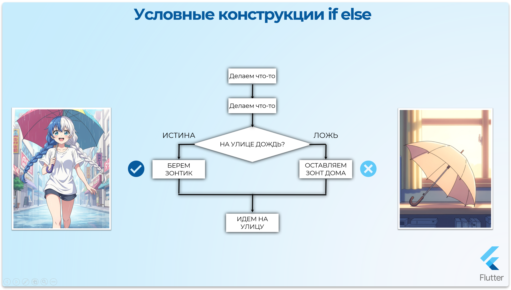
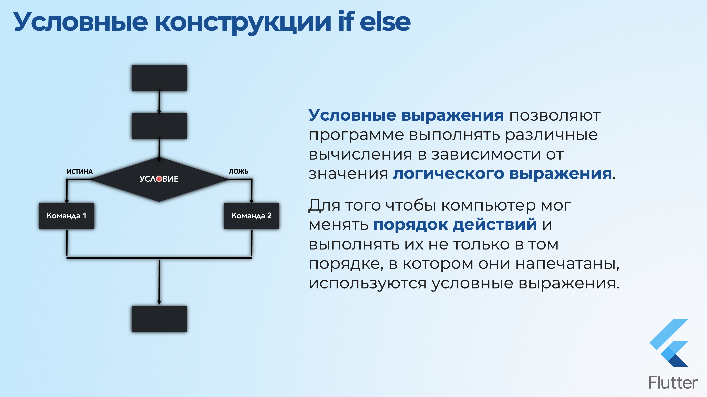
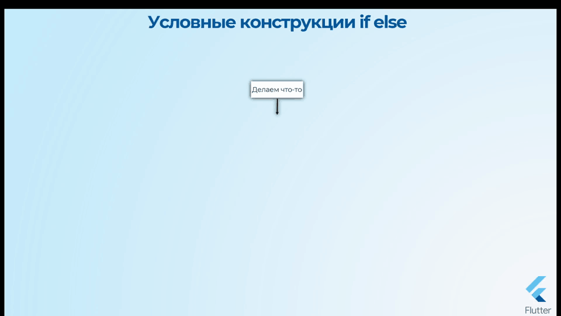
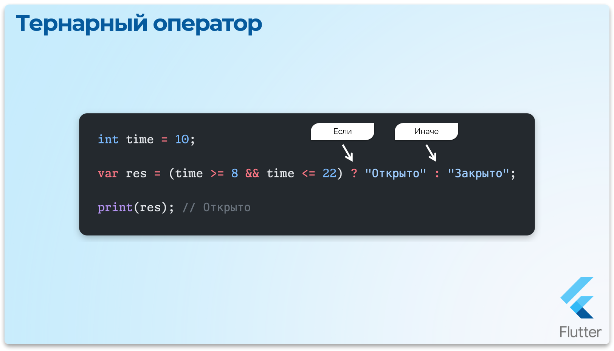

Условные конструкции
Управление потоком

Обычно программный код выполняется последовательно сверху вниз, строчка за строчкой, как мы его написали (поток выполнения).
Бывают ситуации, когда этим последовательным потоком нужно управлять. Например, при каком-то условии поток нужно направить в другом направлении, или вернуться и повторить какие-то действия. Для этого существуют операторы управления потоком.
Условные выражения позволяют программе выполнять различные вычисления в зависимости от значения логического выражения. Для того чтобы компьютер мог менять порядок действий и выполнять их не только в том порядке, в котором они напечатаны, используются условные выражения.
Условные операторы позволяют в зависимости от условия одну часть кода выполнить, а другую часть кода, наоборот, не трогать.


Фигурные скобки в Dart
В Dart, как и в большинстве C-подобных языков, блоки кода после if, else if, else и других конструкций определяются фигурными скобками {}.
Условие Если (if)
Dart - Простое условие if


int time = 45;
// Если условие Истина, то выполнить код внутри { }
if (time == 45) {
print("Делаем перерыв");
}
В результате будет "Делаем перерыв"
Dart - Если условие ложное
int time = 5;
// Если условие Истина, то выполнить код внутри { }
if (time == 45) {
print("Делаем перерыв");
}
В результате код внутри условия никогда не выполнится потому что условие ложное
Условие Если-Иначе (if-else)
Выполняется только один из блоков кода в зависимости от условия.
Dart - Конструкция if-else
int time = 15;
// Если условие ИСТИНА, то выполнить блок в { }
// А иначе выполнить блок в else { }
if (time < 45) {
print("Изучаем теорию");
} else {
print("Либо отдыхаем либо практикуемся");
}
В результате будет "Изучаем теорию"
Условие Если-ИначеЕсли-Иначе (if-else if-else)
Dart - Конструкция if-else if-else
int time = 60;
// Если первое условие ИСТИНА, то выполнить первый блок.
// Иначе, если второе условие (else if) ИСТИНА, выполнить второй блок.
// Если ни одно из условий не выполнилось, выполнить блок else.
if (time < 45) {
print("Изучаем теорию");
} else if (time > 45) {
print("Выполняем практику");
} else { // time == 45
print("Отдыхаем");
}
В результате будет "Выполняем практику"
Условная проверка диапазонов
Dart - Проверка диапазона в условии
int time = 14;
// Истина - время в диапазоне от 8 до 22
if (time >= 8 && time <= 22) {
print("Пятёрочка открыта 😁");
} else {
print("Пятёрочка закрыта 😒");
}
В результате будет "Пятёрочка открыта 😁"
Тернарный оператор
Тернарный оператор в Dart — это условное выражение в одну строку, которое возвращает одно из двух значений в зависимости от условия.

Dart - Тернарный оператор
int time = 10;
// [условие] ? [значение_если_истина] : [значение_если_ложь]
String result = (time >= 8 && time <= 22) ? "Открыто" : "Закрыто";
print(result); // Открыто
Условные конструкции switch-case
switch-case
Предоставляет удобный способ выбрать один из нескольких возможных вариантов выполнения кода в зависимости от значения выражения. Это особенно полезно, когда нужно обработать множество альтернативных вариантов для значения одной переменной.
Простая конструкция switch-case
Здесь проверяется значение переменной day, и выполняется соответствующий блок кода. Блок default выполняется, если ни один из case выше не сработал.
Dart - Простой switch-case
int day = 3;
switch (day) {
case 1:
print("Понедельник");
break;
case 2:
print("Вторник");
break;
case 3:
print("Среда");
break;
case 4:
print("Четверг");
break;
case 5:
print("Пятница");
break;
case 6:
print("Суббота");
break;
case 7:
print("Воскресенье");
break;
default:
print("Неверный день");
}
В результате будет "Среда"
Объединение нескольких case (Fall-through)
Можно сопоставить одно действие сразу с несколькими значениями, пропуская оператор break.
Dart - Объединение case
String day = "Суббота";
switch (day) {
case "Суббота":
case "Воскресенье":
print("Выходной день");
break;
case "Понедельник":
case "Вторник":
case "Среда":
case "Четверг":
case "Пятница":
print("Рабочий день");
break;
default:
print("Неизвестный день");
}
В результате будет "Выходной день"